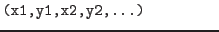

XMM-Newton Science Analysis System
selectlib (selectlib-4.74.1) [xmmsas_20170112_1337-16.0.0]
Special region filter functions
The following functions evaluate to true if a given point lies
inside or on the border of the specified geometric figure:
- point(x0,y0,Xcolumn,Ycolumn)
- line(x0,y0,x1,y1,Xcolumn,Ycolumn)
- circle(xCenter,yCenter,radius,Xcolumn,Ycolumn)
- sector(xCenter,yCenter,fromAngle,toAngle,Xcolumn,Ycolumn) or
pie(xCenter,yCenter,fromAngle,toAngle,Xcolumn,Ycolumn)
- ring(xCenter,yCenter,radius1,radius2,Xcolumn,Ycolumn) or
annulus(xCenter,yCenter,radius1,radius2,Xcolumn,Ycolumn)
- ellipse(xCenter,yCenter,xHalfWidth,yHalfWidth,rotation,Xcolumn,Ycolumn)
- elliptannulus(xCenter,yCenter,xHalfWidthInner,yHalfWidthInner
xHalfWidthOuter,yHalfWidthOuter,rotationInner,rotationOuter,Xcolumn,Ycolumn) or
elliptring(xCenter,yCenter,xHalfWidthInner,yHalfWidthInner
xHalfWidthOuter,yHalfWidthOuter,rotationInner,rotationOuter,Xcolumn,Ycolumn)
- box(xCenter,yCenter,xHalfWidth,yHalfWidth,rotation,Xcolumn,Ycolumn)
- rectangle(xLoLeft,yLoLeft,xUpRight,yUpRight,rotation,Xcolumn,Ycolumn)
- rhombus(xCenter,yCenter,xHalfWidth,yHalfWidth,rotation,Xcolumn,Ycolumn) or
diamond(xCenter,yCenter,xHalfWidth,yHalfWidth,rotation,Xcolumn,Ycolumn)
- polygon(x1,y1,x2,y2,x3,y3,x4,y4,...,Xcolumn,Ycolumn)
- polygon2(x1,y1,x2,y2,x3,y3,x4,y4,...,Xcolumn,Ycolumn)
where
:
:
 :
:
:
:
:
:
:
:
:
Please note:
- Although this is usually the case, the above filter functions
do not have to be necessarily applied in the spatial domain.
(Xcolumn,Ycolumn) can indeed be the names of any columns in the table,
i.e., selections in any two-dimensional data space are possible.
- In the case of the polygon filter the result of the inclusion test
for points that lie exactly on a boundary or coincide with a vertex is
uncertain. If this behavior is unacceptable please avail the polygon2
filter whose inclusion test results for those points is always positive.
This comes at the price of a worse run time efficiency.
XMM-Newton SOC/SSC -- 2017-01-12